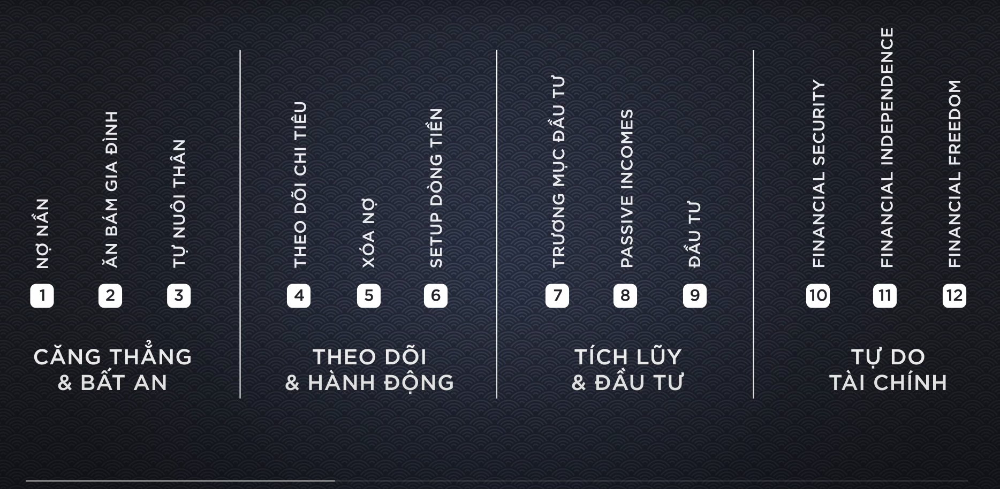
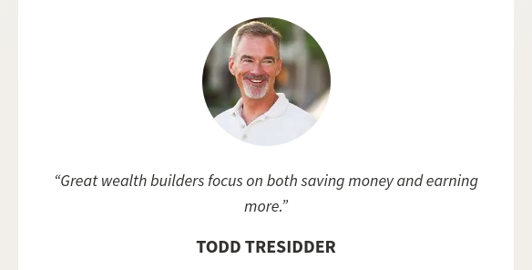

📂 Ảnh được lấy từ podcast của chú Hiếu Nguyễn và bài viết này là tổng hợp những kiến thức mà chú đã chia sẻ trong podcast đó.
Như đã thấy ở bức ảnh trên, có bốn cột mốc chính đánh dấu cho từng giai đoạn trong hành trình Tự do tài chính.
🌿 Căng thẳng & Bất an
🌱 Nợ nần: trạng thái thấp nhất (level ⚠️)
- Đây thường sẽ là xuất phát điểm của hầu hết các bạn trẻ bên nước ngoài. Khi ra trường họ sẽ phải gách 1 món nợ - Student Loan
- Còn ở VN thường sẽ có xuất phát điểm ở cột mốc thứ 2
🌱 Ăn bám gia đình (level 0️⃣)
- Chưa có gì trong tay, phụ thuộc hoàn toàn vào gia đình.
🌱 Tự nuôi bản thân (level 1️⃣)
- Bắt đầu có thu nhập và có thể tự nuôi bản thân nhưng vẫn theo kiểu lương tháng nào tiêu hết tháng đấy.
Điểm chung ở giai đoạn này là bản thân sẽ luôn ở trong trạng thái căng thằng và bất an. Nếu có những biến cố(mất việc, ốm đau, …) xảy ra sẽ hoàn toàn không có khả năng đối ứng được.
🌿 Theo dõi & Kiến tạo
🌱 Theo dõi chi tiêu (level 2️⃣ - trạng thái hiện tại của tôi)
- Theo dõi chi tiết từng chi tiêu hàng ngày của bản thân. Từ đó tính toán được mức Chi tiêu tối thiểu và Chi tiêu tiêu chuẩn.
- Bước này cực kì quan trọng, 2 mức độ chi tiêu xác định được ở trên sẽ là tiền đề để chúng ta tính toán những cột mốc tiếp theo.
- Hiện tại tôi đã và đang tập hình thành thói quen lưu lại chi tiêu hằng ngày bằng app Money Lover.
Tạo cho bản thân thói quen theo dõi chi tiêu. Các mức chi tiêu sẽ thay đổi theo thời gian nên thói quen này vô cùng quan trọng.
Xác định được mức Chi tiêu tối thiểu và Chi tiêu tiêu chuẩn.
Sau quá trình theo dõi 👀, tiếp đến sẽ là hành động 👷♂️.
🌱 Xóa nợ (level 3️⃣)
- Là nền móng quan trọng để chúng ta có thể xây dựng vững chắc mô hình tài chính của bản thân sau này.
- Ở level này, chúng ta cần xác định những khoản nợ xấu, khoản nợ tốt, thứ tự ưu tiên của từng khoản nợ. Kết hợp với kết quả của việc theo dõi chi tiêu => Có một kế hoạch rõ ràng cho việc trả nợ dứt điểm.
- Đừng nóng vội khi vừa muốn trả nợ vừa muốn tích góp và vừa muốn đầu tư. Bạn sẽ phải hối hận vì phải xử lý nhiều những tasks khó cùng một lúc đấy.
Tâm lý thoải mái, không lo đến nợ nần nữa, tập trung hoàn toàn tâm trí cũng như nguồn tiền cho việc xây dựng tài chính cá nhân.
Trả nợ đời xong rồi thì tập trung xây dựng mô hình tài chính của bản thân thôi 💪
🌱 Setup dòng tiền (level 4️⃣)
- Không nên để tiền ở một chỗ, dễ dẫn đến việc tiêu tiền lấn sang những quỹ có mục đích khác.
- Ở bước này chúng ta sẽ thiết lập Dòng chảy cho nguồn tiền của bản thân. Tiếp cận những định nghĩa mới như Quỹ Khẩn Cấp (Emergency Fund), Rainy Day Fund, Every Day Fund, Saving Account, … được sử dụng như thế nào? Cách xác định tỉ lệ cho từng quỹ là bao nhiêu?
- Sau khi Setup xong, tôi có thể xác định được runway của mình là bao nhiêu. Khi có biến cố, chất lượng cuộc sống của tôi vẫn được đảm bảo trong thời gian bao lâu.
Tạo ra một hành lang an toàn về tài chính cho bản thân. Tránh bản thân gặp phải những bất an khi có biến cố xảy đến.
🌿 Tích lũy & Đầu tư (Well Building)
Mượn cách ví von của Kevin O’Leary - một trong những Shark xuất hiện trong chương trình Shark Tank của Mỹ chia sẻ:
Tôi coi tiền của mình là những chiến binh 💂. Mỗi ngày tôi thả những chiến binh của mình ra trận và cuối ngày tôi muốn những chiến binh đó sẽ đem lại cho mình thật nhiều tù binh 💵💵💵.
Sau khi đạt được level 4️⃣, chúng ta đã xây dựng được một hậu phương vững chắc. Công việc bây giờ sẽ là tuyển mộ quân sĩ để bắt đầu ra trận chinh chiến ⚔️.
🌱 Trương mục đầu tư (level 5️⃣)
- Xây dựng trương mục đầu tư và có cho mình những phương châm để quản lý những trương mục này.
🌱 Thu nhập thụ động (Passive Incomes - level 6️⃣)
- Xây dựng và phát triển những nguồn thu nhập thụ động.
Level 5️⃣ & 6️⃣ sẽ đi liền với nhau, giúp chúng ta chiêu mộ thêm nhiều binh lính 💂 (gia tăng nguồn vốn). Nguyên tắc căn bản của giai đoạn này đó là tăng thu và giảm chi.

Sau 2 level trên, khi đã tích lũy được một nguồn vốn nhất định, bây giờ chúng ta có thể chuyển qua bước Đầu tư.
🌱 Đầu tư (level 7️⃣)
- Tìm cách chọn những mô hình đầu tư hiệu quả.
- Học hỏi, trau dồi, nâng cao kiến thức, kinh nghiệm đầu tư.
Ở gian đoạn này, chúng ta có thể xen kẽ thực hiện các bước với nhau, không cần tuần tự như giai đoạn 2. Giai đoạn này sẽ là giai đoạn dài hơi nhất trong hành trình. Liên tục tích góp và đầu tư thì sẽ đến lúc chúng ta sẽ bước đến giai đoạn thứ 4(tôi không muốn dùng từ giai đoạn cuối cùng vì đây không phải là điểm kết thúc).
🌿 Tự do tài chính
Có 3 cột mốc khi chúng ta đạt đến giai đoạn chính quả này, đó là:
🌱 An toàn tài chính (Finacial Security - level 8️⃣)
- Có được số tiền có thể đảm bảo mức sống cơ bản của bản thân cho đến cuối đời, kể cả khi chúng ta vì một lý do nào đó mà không thể làm việc được nữa.
- Có quyền bỏ đi(ở mọi lĩnh vực)
🌱 Độc lập tài chính (Financial Independence - level 9️⃣)
- Khái niệm FIRE - Financal Independence Retire Early - Ngưng làm việc nhưng vẫn đáp ứng được những nhu cầu liên quan đến tài chính theo mức chúng ta mong muốn.
🌱 Tự do tài chính (Financial Freedom - level 🔟)
- Khi đã ở level 9️⃣ đủ lâu chúng ta sẽ dần cảm nhận được sự tư do khi không phải lệ thuộc vào tiền bạc.
- Lúc này tiền sẽ là công cụ để chúng ta thực hiện những mục tiêu khác.
- Có thể tự tin nói: Fuckyou Money!!!